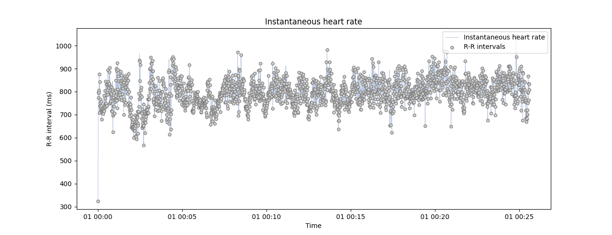

Note
Click here to download the full example code
Detecting and correcting artefacts in peaks vector#
This example describes artefacts correction peaks vectors.
The function correct_rr() automatically detect artefacts using the method proposed by Lipponen & Tarvainen (2019) 1. At each iteration, extra and missed peaks are corrected replacement or removal of peaks. The detection procedure is run again using cleaned intervals. When using this method, the signal length stays constant, which makes it more appropriate for event-related designs where the occurrence of certain events must be controlled.
# Author: Nicolas Legrand <nicolas.legrand@cfin.au.dk>
# Licence: GPL v3
import numpy as np
import pandas as pd
from systole import import_dataset1
from systole.detection import ecg_peaks
from systole.correction import correct_peaks
from systole.plots import plot_rr, plot_evoked
import matplotlib.pyplot as plt
ecg_df = import_dataset1(modalities=['ECG', 'Stim'])
0%| | 0/2 [00:00<?, ?it/s]
Downloading ECG channel: 0%| | 0/2 [00:00<?, ?it/s]
Downloading ECG channel: 50%|##### | 1/2 [00:00<00:00, 8.52it/s]
Downloading Stim channel: 50%|##### | 1/2 [00:00<00:00, 8.52it/s]
Downloading Stim channel: 100%|##########| 2/2 [00:00<00:00, 8.34it/s]
Downloading Stim channel: 100%|##########| 2/2 [00:00<00:00, 8.36it/s]
signal, peaks = ecg_peaks(ecg_df.ecg, method='pan-tompkins', sfreq=1000)
are using Matplotlib as plotting backend.
np.random.seed(123) # For result reproductibility
corrupted_peaks = peaks.copy() # Create a new RR intervals vector
# Randomly select 50 peaks in the peask vector and set it to 0 (missed peaks)
corrupted_peaks[np.random.choice(np.where(corrupted_peaks)[0], 50)] = 0
# Randomly add 50 intervals in the peaks vector (extra peaks)
corrupted_peaks[np.random.choice(len(corrupted_peaks), 50)] = 1
using show_artefacts=True so the artefacts detection runs automatically and shows in the plot.
plot_rr(
corrupted_peaks, input_type='peaks',
show_artefacts=True, line=False, figsize=(13, 5)
)
plt.show()
correction method. This function will automatically detect possible artefacts in the peaks vector and reconstruct the most coherent values using time series interpolation. The number of iteration is set to 2 by default, we add it here for clarity. Here, the correct_peaks function only correct for extra and missed peaks. This feature is intentional and reflects the notion that only artefacts in R peaks detection should be corrected, but “true” intervals that are anomaly shorter or longer should not be corrected.
peaks_correction = correct_peaks(corrupted_peaks)
Cleaning the peaks vector using 1 iterations.
- Iteration 1 -
... correcting 44 extra peak(s).
... correcting 47 missed peak(s).
plot_rr(peaks_correction["clean_peaks"], input_type="peaks",
show_artefacts=True, line=False, figsize=(13, 5))
plt.show()
event-related analysis, where the evolution of the instantaneous heart rate is assessed after some experimental manipulation (see Tutorial 5). One way to control for the quality of the artefacts correction is to compare the evoked responses measured under corrupted, corrected and baseline recording. Here, we will use the plot_evoked function, which simply take the indexes of events as input together with the recording (here the peaks vector), and produce the evoked plots.
# Merge the two conditions together.
# The events of interest are all data points that are not 0.
triggers_idx = [np.where(ecg_df.stim.to_numpy() != 0)[0]]
_, axs = plt.subplots(1, 3, figsize=(18, 6), sharey=True)
plot_evoked(rr=corrupted_peaks, triggers_idx=triggers_idx, ci=68,
input_type="peaks", decim=100, apply_baseline=(-1.0, 0.0), figsize=(8, 8),
labels="Uncorrected", palette=["#c44e52"], ax=axs[0])
plot_evoked(rr=peaks_correction["clean_peaks"], triggers_idx=triggers_idx, ci=68,
input_type="peaks", decim=100, apply_baseline=(-1.0, 0.0), figsize=(8, 8),
labels="Corrected", ax=axs[1])
plot_evoked(rr=peaks, triggers_idx=triggers_idx, ci=68, palette=["#55a868"],
input_type="peaks", decim=100, apply_baseline=(-1.0, 0.0), figsize=(8, 8),
labels="Initial recording", ax=axs[2])
plt.ylim(-20, 20);

(-20.0, 20.0)
References#
- 1
Lipponen, J. A., & Tarvainen, M. P. (2019). A robust algorithm for heart rate variability time series artefact correction using novel beat classification. Journal of Medical Engineering & Technology, 43(3), 173–181. https://doi.org/10.1080/03091902.2019.1640306
Total running time of the script: ( 0 minutes 10.753 seconds)